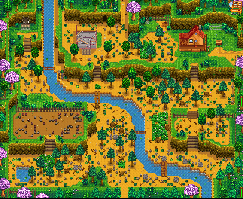
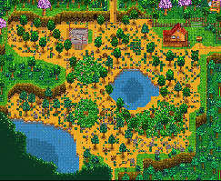

Farm Type Options
There are currently 8 different farm maps that you can choose from when you create a new save. While there are certain structures that appear on every map, each type has unique natural features that help with the development of different skills.
Standard Farm
Description Standard farms are the original farm type released with version 1.0 of Stardew Valley. These maps are mostly farming land, making ideal for raising both crops and animals. This farm type is reccomened for beginner players There are two small ponds on the property, but fishing in these ponds will only yield trash.
Associated Skill Farming (crops)
Farm Layout
Riverland Farm
Description The map for the riverland farm is mostly water, significantly decreasing the overall farming area. However, players are able to catch the same fish that are found in Pelican Town from their farm.
Associated Skill Fishing
Farm Layout

Forest Farm
Description There are many trees found all around the map. The following items spawn in the west area of the map:
- Renewable Large Stumps (Hardwood)
- Seasonal forage items, except in Winter
- Non-standard item in each season:
- Morels in Spring
- Common Mushrooms in Summer
- Chanterelles, Purple Mushrooms, and Red Mushrooms in Fall
There are also unique weeds that spawn all across the farm that always drop mixed seeds.
Associated Skill Foraging
Farm Layout
Hill-Top
- Stones
- Ore Nodes
- Geode nodes
Associated Skill Mining
Farm Layout
Wilderness Farm
Description On the Wilderness Farm, monsters spawn at night. The number of mosters that spawn increase as the player's combat level grows. Among these mosters is the Wildreness Golem, which is a monster found only on this kind of farm. This is not reccomended for new players.
Associated Skill Combat
Farm Layout
Four Corners Farm
- Top left: Foraging
- Small grassy area containing a Large Stump
- weeds here can transform into the unique ones that always drop mixed seeds
- Top right: Farming
- All tillable space
- Able to build animal buildings and raise animals
- Bottom left: Fishing
- Pond is fishable with a 50% chance for players to catch fish found in the Cindersap Forest pond
- Bottom right: Mining
- Small quarry that spawns rocks, ore and geodes
Associated Skill Multiplayer
Farm Layout
Beach Farm
Description The Beach Farm is mostly sand, which cannot be watered by sprinklers. All of the water surrounding the land is fishable, and ocean fish will be caught when fishing on the farm. Additionally, beach forage items will spawn on the shores. Occasionally, supply crates will wash up with a random variety of useful items.
Associated Skill Fishing & Foraging
Farm Layout

Meadowlands Farm
Description Chewy blue grass, which animals love, grows on the Meadowlands Farm. Rather than starting with just a farm house and parsnip seeds, players begin with a coop, two chickens, and 15 pieces of hay. The river on the land is fishable, and you can catch Cindersap Forest fish.
Associated Skill Farming (animals)
Farm Layout